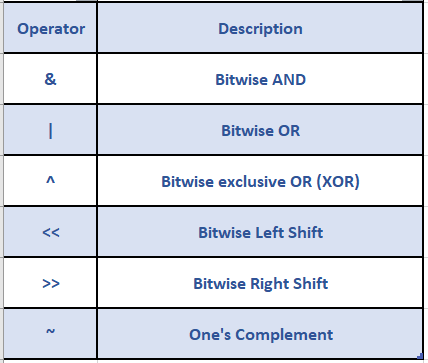

Bitwise Operator
Bitwise Operator adalah operator yang bekerja pada level bit (bit-level) dari data. Mereka memungkinkan Anda untuk melakukan operasi matematika pada representasi biner dari angka, yaitu pada tingkat bit individu.
Shift Operator
Operator shift digunakan untuk menggeser bit-bit suatu bilangan ke kiri atau ke kanan dengan cara mengalikan atau membagi bilangan tersebut.
Left shift << : Operator ini menggeser bit operan pertama ke kiri, operan kedua menentukan jumlah tempat yang akan digeser.
Contoh : Misalnya, jika kita memiliki bilangan biner x dan kita melakukan operasi x << y, maka akan menggeser bit dari x sejauh y posisi ke kiri.
int x = 5; // Representasi biner: 0000 0101
int y = 2; // Geser dua posisi ke kiri
int result = x << y; // Hasilnya adalah 20 (0001 0100)
Right shift >>` : Operator ini menggeser bit operan pertama ke kanan, operan kedua menentukan jumlah tempat yang akan digeser.
int x = 20; // Representasi biner: 0001 0100
int y = 2; // Geser dua posisi ke kanan
int result = x >> y; // Hasilnya adalah 5 (0000 0101)
Bitwise Implementation
Bitwise AND
&: Operator ini menghasilkan bit 1 pada posisi tertentu hanya jika kedua bit pada posisi tersebut adalah 1.int a = 5; // Representasi biner: 0101 int b = 3; // Representasi biner: 0011 int result = a & b; // Hasilnya adalah 1 (0001)
Bitwise OR
|: Operator ini menghasilkan bit 1 pada posisi tertentu jika salah satu atau kedua bit pada posisi tersebut adalah 1.int a = 5; // Representasi biner: 0101 int b = 3; // Representasi biner: 0011 int result = a | b; // Hasilnya adalah 7 (0111)
Bitwise XOR
^: Operator ini menghasilkan bit 1 pada posisi tertentu hanya jika salah satu dari dua bit pada posisi tersebut adalah 1 (bukan keduanya).int a = 5; // Representasi biner: 0101 int b = 3; // Representasi biner: 0011 int result = a ^ b; // Hasilnya adalah 6 (0110)
Bitwise NOT
~: Operator ini mengubah setiap bit 0 menjadi 1 dan sebaliknya. Hasilnya adalah komplement dari nilai asli.int a = 5; // Representasi biner: 0000 0000 0000 0000 0000 0000 0000 0101 int result = ~a; // Hasilnya adalah -6 (1111 1111 1111 1111 1111 1111 1111 1010)